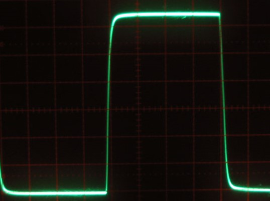
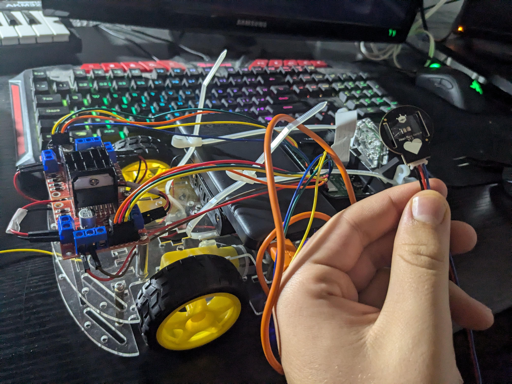
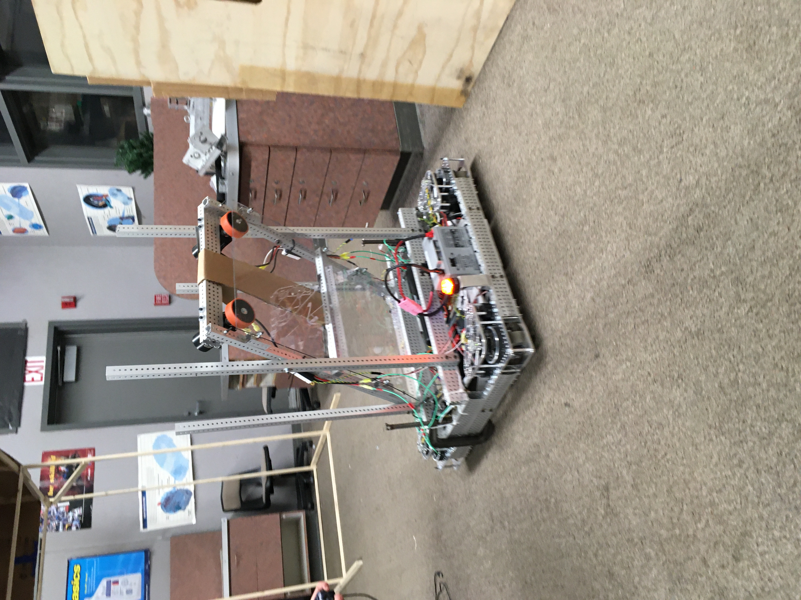

Portfolio

Personal Website Project
A personal website made with the guidance of the organization Hack4Impact. It was made in 6 days with HTML and CSS.
Learn more
Everybody Just Wants One More Day
An interactive video game hosted on the web. This project was built with the help of me and other students at Maria Carrillo High School for a poetry project. The video game was built using Unity and C# and was hosted online on Vercel. Credit to Kevin Wei and Dylan Decastro for their help on programming, storywriting, art, and music.
Learn more
Imersi
Web based quiz game created in Winter 2023. Imersi utilizes the MERN techstack as well as websockets and Redis to create a live quiz game and host user data.
Learn moreGitHub
View my GitHub and all its contributions; although, not all projects are covered or public on the github due to security reasons.
Learn more
Tyler-hbe-projects
Web based project downloader made using the MERN tech stack, styled with react bootstrap and some basic css. The backend uses express and MongoDB Atlas cloud hosting to deliver files.
Learn more
Noise
Audio effect made using the Steinberg VST3 SDK, coded in c++. The effect adds a scaleable noise effect to an audio channel for some extra crunch.
Learn more
fQuantizer
Audio effect made using the Steinberg VST3 SDK, coded in c++. The effect adds a scaleable quantization effect to the amplitude of a sound channel, simulating a lower quality amplitude by restricting the range of possible values.
Learn more
Medical display robot
Built a raspberry pi robot that connects to the internet with a website, allowing users to connect to the robot remotely. The robot has movement capabilities as a rover, with a heart display monitor, allowing users to test the heart rate of people remotely in extenuating circumstances.

Jukebot
A raspberry pi utility that functions similarly to a chromecast, allowing users to send in video links to a discord server, where a discord bot scans for links and extracts videos using yt-dlp and plays them on the pi screen. There is also video queue functionality and functionality for sites like Hianime with added exterior extractors.

MCHS Robotics
Managed club events and budgets (upwards of $8000) in a robotics team focusing on the FRC competition, provided mentorship with organized presentations on robotics programming and engineering, worked with a diverse team of upwards of 10 students to design and implement robotics strategies. Assisted in design and implementation of robot designs– including soldering, wiring of power and bus cables, wiring and maintenance of motors, implementation of robotic arms using pneumatics, and maintenance of radio and computer systems. Coded movement– including basic tank drive system, swerve drive systems, and autonomous movement with gyro systems. Coded computer vision systems aiding in both driving and autonomous movements. Coded mechanical arms and pneumatics systems. All coding was done in Java with assistance of the WPILIB library. Some utility from Photonvision.